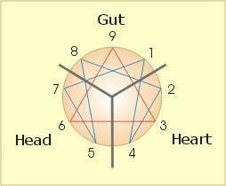
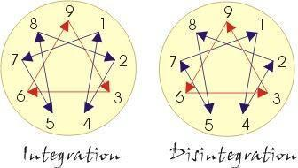

Data publicării: 18.05.2018
Autor articol: Mircea Vaida
1. Determninarea tipologiei de personalitate prin metoda enneagramei
Modelul de enneagrame este un model psihodinamic care se bazează pe nouă tipologii (eneatipuri). Abordarea curentă utilizată a fost dezvoltată în principiu de Oscar Ichazo în jurul anilor ’60 şi răspândită de Claudio Narajo în anii ’70.
Este de remarcat faptul ca societatea umana poate sa foloseasca in mod benefic cunoasterea tipologiei persoanelor care sunt implicate in diverse activitati, care este scopul acestor rapoarte care vor fi in continuare prezentate.
Nu cred ca este o surpriza insa a constata ca in societatea digitala de acum, datele personale ale oamenilor pot fi usor utilizate in analize complexe care sa se foloseasca de specificitatea tipologiilor determinate sugerand in aceste cazuri actiuni care la o analiza detasata pot sa apara incosecvente si cu rezultate neasteptate.
1.1 Istoria Enneagramei
Istoria enneagramei este în mare parte nedocumentată, se crede că a fost folosită de peste 2500 de ani. Rădăcinile sale sunt învăluite în mister, dar se crede că provine dintr-o tradiție antică a înțelepciunii Orientului Mijlociu în regatele Babilonului și în școala de înțelepciune a Frăției Sarmoun, o fratie sufita din zona asiatica. Pornind de la un studiu sintetic realizat in [20] precum si de la experienta autorului si analiza unor bogate surse referitoare la enneagrama vor fi prezentate in continuare elementele esentiale care au facut ca ennegrama sa devina un instrument de baza in determinarea personalitatii umane.
În secolele al XIV-lea sau al XV-lea enneagrama a fost transmisa matematicienilor islamici care au încorporat-o în învățăturile lor mistice si in acelas timp stiintifice. In general este atribuită sufiților care locuiau odinioară în regiunea Afganistanului. Sufismul a fost o tradiție orală relativ secretă care a fost păzită cu zel, astfel încât să nu cadă în mâini greșite. Alte versiuni istorice duc originea enneagramei înapoi la taoism, budism, creștinism și grecia antică (Tektractis).
Enneagrama ca o traditie orientala era transmisa in mod oral. Nu se cunoaste nci o înregistrare scrisă până când nu a fost adusă în occident de misticul rus G. I. (George Ivanovich) Gurdjieff (1866-1949). Gurdjieff a fost initiat în folosirea enneagramei de invatati sufiti. Apoi a introdus-o la Berlin si Londra la începutul secolului 20 pentru a recunoaște aptitudinile elevilor săi pentru anumite tipuri de instruire bazate pe introspectia vieții interioare. Impreună cu matematicianul si discipolul său principal Ouspenski va continua activitatea in Franta la „Institute for the Harmonious Development of Man” in sudul Parisului la Prieuré des Basses Loges in Avon langă Château de Fontainebleau. Cu toate acestea, Gurdjieff nu a transmis enneagrama elevilor săi în întregime.
Enneagrama de astăzi, asa cum a fost specificat initial, este atribuita unui chilian Oscar Ichazo. El a fost instruit cu profesori sufiti din Afganistan și a încorporat-o în sistemul său de dezvoltare umană. În anii ’60, el a dezvoltat o teorie a nouă tipuri de personalități corespunzătoare cu cele nouă puncte ale enneagramei. În 1971, Ichazo a adus învățătura lui din Chile în Statele Unite, unde John Lilly și Claudio Naranjo au integrat-o. Naranjo a adaptat enneagrama în termeni ai psihologiei moderne occidentală și a numit sistemul său enneagrama fixărilor. Prin Naranjo, un preot iezuit numit Bob Ochs a folosit asa numitele noua numere “Sufi Numbers” ca un instrument pentru dezvoltarea spirituală, rugăciune și trăirea în comunitate. Adică, enneagrama a devenit publica în 1972 in zona cultelor, când a fost preluata si de creștinii californieni.
În anii 1980, autori Helen Palmer și Don Richard Riso au popularizat Enneagrama de fixări a lui Naranjo ca un sistem psihologic bazat pe profile. Enneagrama a fost folosita în S.U.A. odata cu dezvoltarea psihoterapiei.
Astăzi, Enneagrama este utilizată pe scară largă în psihologia clinică, de mari corporații internationale și de asemenea a ramas si pe partea spirituala printre preoții iezuiti și catolici din unele tari de cultura occidentala si nu numai. Așa cum a remarcat Riso, “Ea împletește spiritualitatea și psihologia într-un mod plăcut. Enneagrama este o spiritualitate universală: aduce oamenii împreună din toate religiile”.
Utilizarea sa în lumea afacerilor este o evoluție relativ recentă. Cu toate acestea, în ultimii 20 de ani, numeroase cărți și sute de seminarii de dezvoltare a Enneagramei și-au găsit drumul în domeniul afacerilor.
1.2 Considerente de baza ale enneagramei
Enneagrama împarte comportamentul oamenilor în nouă tipuri distincte și unice. Astfel, cunoașterea Enneagramei poate permite înțelegerea și prezicerea comportamentului, percepțiilor, interacțiunilor, comunicărilor și a stilului de învățare ale unei persoane în diferite situații. Enneagrama poate fi folosita pentru a înțelege ce antrenează oamenii să se comporte intr-un anumit mod. De asemenea, înțelegerea Enneagramei poate fi folosită în aplicații practice, cum ar fi team building-ul, motivația, conducerea, împuternicirea, instruirea și educația studenților, precum și pentru auto-descoperire și evoluție spirituală.
Enneagrama a fost folosita în primul rând ca instrument de stimulare a conștiinței de sine, a auto-observării, a reamintirii de sine și a cultivării cunoștințelor spirituale. Potrivit autorului Helen Palmer [21], eneagrama este “o hartă personalizată pentru experiența spirituală”. Cu toate acestea, mai recent, a migrat la locul de muncă ca un instrument de management și învățare folosit în team building, angajare, promovare și formare. În ansamblu, este un instrument util care poate fi folosit pentru a afla rădăcina a ceea ce îi motivează pe indivizi și îi face să gândească, să se simtă și să acționeze așa cum fac cu adevarat, adică este “o fereastră în suflet”.
Enneagrama reprezintă nouă tipuri de personalitate de bază sau de fixare a caracterului. Fiecare tip este o strategie psihologică specifică, o viziune asupra lumii sau un mecanism de apărare dezvoltat la începutul vieții pentru a evita disconfortul emoțional, “În realitate, fiecare este o strategie bazată pe ideea de” eu “, obținând ceea ce “cred eu că am nevoie”, rămânând sub control și protejând cine “sunt eu”, [20]. Vedem aici aspectul dualist bazat pe cunosterea si protejarea eu-lui personal. Enneagrama explică natura eu-lui și modul în care eu-l funcționează în cele nouă tipuri de bază ale indivizilor.
Fiecare persoană este caracterizată predominant de aspectele duale cum ar fi bunătatea și aspectul negativ adecvat, in acest caz răutatea, pornind de la aceste nouă tipuri. Adică ceea ce ne motivează poate fi aparent virtuos și, de asemenea, un viciu. Cu toate acestea, conștientizarea viciului și modelarea automată ne permite să facem alegeri mai conștiente și să evoluăm ca indivizi.
Așa cum a remarcat Goldberg [22], “Adevărații câștigători [sunt aceia] care merg cu fluxul personal al personalității lor și nu pierd o grămadă de timp și energie încercând să fie alt – ceva (sau alt – cineva) ce nu sunt de fapt”.
Se spune că cei care lucrează cu Enneagrama se vor desprinde de ego-ul lor personal, care îi va desprinde de suferință și, eventual, ii va duce la starea de non-sine sau de revelare a sinelui interior profund care este universal, nemuritor, infinit.
Psihologia, comunitățile de afaceri și educația au avut un interes continuu în notiunea de personalitate. Personalitatea este importantă deoarece indică calități într-o persoană deasupra și în afara competențelor și calificărilor, de exemplu, atitudinea la lucru, conștiința, gradul de angajare, modul în care se tratează stresul și atitudinea față de ceilalți.
Unii cred că tot ceea ce o persoană face e dat de personalitate, în timp ce alții cred că situația sau mediul prezic comportamentul. În orice caz, se crede că personalitatea este fixată la vârsta de 21 de ani și că încercarea de a merge împotriva tipului are nevoie de o cantitate incredibilă de energie și chiar poate fi inutilă in cazul oamenilor integrati in societate.
Daca in lipsa unor influente majore exterioare, copiii pana la 6-7 ani sunt capabili sa isi pastreze puritatea initiala si sa treaca de aspectele legate de personalitate, odată stabilită personalitatea la adolescentă, ea va avea o influentă majoră in perioada de maturitate. Urmand o cale spirituală, de obicei oamenii doar la varsta a treia incep sa realizeze că natura umană adevărată, cea care a fost la inceput, ar trebui sa dizolve personalitatatea dobandită in timpul vietii manifestată prin diferite măsti, ca ea sa poată astfel să se manifeste conform stării originare umane, liberă de constarngeri.
Starea de eliberare de personalitate ar trebui sa permită oamenilor o manifestare in cadrul societatii conformă principiilor armonioase de viată care să aibă in vedere prosperitatea intregii umanităti. Curentele spirituale adevărate incearcă să arate si să dezvolte o asemenea directie.
Enneagrama cu testele psihometrice corespunzătoare poate servi ca o oglindă, astfel încât indivizii să se vadă în mod clar, asa cum erau ei la origine, și să facă alegeri mai conștiente.
Potrivit Enneagramei, oamenii sunt împărțiți în nouă tipuri de personalitate sau fixare de caractere indiferent de sex, rasă, vârstă sau religie. Fiecare tip este definit atât în termeni de calități negative, cât și pozitive, iar un anumit tip din cele nouă nu este mai bun decât altul. Cu toate acestea, poate fi dificil să se decidă ce tip din Enneagrama este un individ. Adică, uneori, persoane de diferite tipuri pot fi motivați și par să se comporte în moduri similare, dacă nu identice. De asemenea tipurile nu pot sa fie perfecte, totdeauna vor exista influente. In acest sens se va arata că tipul de bază (esenta), si tipurile vecine, asa numitele aripi, oferă elementele de bază in determinarea personalitătii.
Esența este adevărul unui individ. Este plinătatea puterii, curajului, înțelegerii și iubirii. Fiecare individ a avut în mod obișnuit vremuri când această posibilitate pură, nevinovată și neexplorată a strălucit prin ea insăsi și a fost experimentată ca o conștiință sporită. Cu toate acestea, aceste momente de sentiment și de exprimare a esenței pure par a fi trecătoare. Conștientizarea pare să fie acoperită de stresul vieții cotidiene, precum și de modelele egotice și mecanice care par să interzică experiența directă a adevărului. Această acoperire egotică este nucleul fixării caracterului. “Enneagrama de fixare a caracterelor descrie drama misterioasă în care s-a cristalizat conștiința nemuritoare în forma subtilă numită, nodul ego-ului. Acest nod este identificarea greșită a conștiinței cu forma.” [23]. Adică relația dintre esență, fixarea caracterului și personalitatea poate fi reprezentată de trei cercuri concentrice. Cercul principal este Esența sau Adevărul, cel de-al doilea strat este fixarea caracterului sau eu-l, iar al treilea strat este personalitatea sau trăsăturile individuale, obiceiurile și modelele de comportament. Aceasta este, fixarea caracterului care este chiar mai importantă decât personalitatea. Scopul eneagramei este de a reflecta și de a descoperi ceea ce nu suntem, prin determinarea asa numitei fixări a caracterului.
E de remarcat concluzia dată in [23] legată de enneagrama personalitătii: „De fapt, enneagrama descrie fixarea caracterului. Este evident faptul că aceeași fixare a caracterului se poate manifesta ca o mare varietate de personalități, fixarea caracterului este mascarea și imitarea adevăratului caracter sau a esenței. Prin asumarea activitătii desfasurate la nivel de personalitate, punctul esențial este ratat și munca care urmează a fi efectuata este nefolositoare. Darul adevărat al eneagramei nu este legat doar despre determinarea transformarilor, nici despre stările mistice, nici despre reducerea ego-ului, nici despre lucrul asupra personalității, ci mai degrabă despre sfârșitul identificării false ca entitate limitată “.
În ciuda acestor dificultăți de a determina tipologiile de baza, testele psihometrice au fost utilizate pentru angajarea, promovarea și dezvoltarea profesională de către o treime din întreprinderile din S.U.A. În special, un număr din ce în ce mai mare de companii sunt interesate să utilizeze enneagrama pentru a evalua competențele necesare pentru alegerea adecvata a locurilor de muncă, de exemplu, leadership, abilități de construire a strategiilor, abilități de luare a deciziilor, negocierea, influențarea capacității și utilizare a puterii, aptitudinile de gestionare a conflictului și lucrul în echipă. Executivii și personalul companiilor precum Motorola, Boeing, Toyota, Adobe, AT & T și Marriott au studiat Enneagrama. La Silicon Graphics, de exemplu, face parte din programul de educație continuă. Chiar și CIA a ținut briefing-uri despre comportamentul bazat pe eneagrama al liderilor mondiali, existand opinii ca echipele de interventie sunt alese folosind si principiile enneagramei. Ca atare, industria de testare psihometrica a crescut semnificativ in ultimii ani. De fapt, studiile au arătat că rezultatele profilării sunt de trei ori mai exacte în prezicerea performanței locului de muncă decât cea a experienței de muncă anterioare a unei persoane. Acest grad ridicat de predictibilitate este valabil si pentru alte teste de personalitate cum ar fi indicatorul de tip Myers-Briggs (MBTI) care va fi prezentat ulterior. Cu toate acestea, este totuși recomandat ca testarea să fie utilizată împreună cu un interviu, precum și cu aptitudinile și testele de aptitudini. Noi studii arata ca abordarea cantitativă bazată pe teste de personalitate nu este suficientă si de aceea in special spiritualitatea orientală oferă si alte modalităti de analiză mai mult calitative, dar cu rezultate importante [17].
1.3 Rolul practic al enneagramei
Deși nu este asociată cu nici o religie, una dintre utilizările primare ale Enneagramei este ca un instrument transformator care ne ajută să realizăm natura noastră esențială (natura divină sau ființa) și să ne integrăm personalitatea. Pentru cei care au avut o experiență spirituală inițiatică de trezire, Enneagrama poate ajuta la determinarea “scopului interior” al auto-transcendenței. Însă Enneagrama poate ajuta pe fiecare dintre noi să realizăm diferitele “scopuri externe”, deoarece are aplicații practice în multe domenii importante ale vieții – relații, orientare profesională, afaceri, educație și educație parentală.
În relații, Enneagrama poate fi folosita pentru îmbunătățirea comunicării, înțelegerii, sinergiei și conexiunii prin valorificarea diferențelor dintre oameni. Ca ființe interdependente, fericirea noastră, în mare parte, depinde de calitatea relațiilor noastre. Și calitatea relațiilor noastre depinde de stima noastră de sine și dorința de a prețui unicitatea celorlalți. Si stima noastra de sine provine din a face alegeri instantanee in aliniere cu valorile noastre cele mai adanci. A face alegeri momentan în aliniere cu valorile noastre cele mai profunde vine de la cunoașterea noastră profundă și de la intelepciunea noastră interioară.
O altă utilizare a Enneagramei, precum și a tuturor celorlalte sisteme de evolutie si determinare personala, este orientarea profesională. Fiecare dintre noi are talente înnăscute care ne vin atât de natural încât nici nu le vedem ca daruri. Din păcate, mulți oameni nu știu ce sunt. În cartea sa “The Pathfinder: Cum să alegi sau să-ți schimbi cariera pentru o viață de satisfacție și succes”, Nicholas Lore, [24], a intervievat 1500 de oameni și a constatat că :
- numai 10% dintre ei simțeau că munca lor se potrivea cu personalitatea lor și a fost un instrument pentru expresia personala.
- 20% dintre oameni s-au bucurat de munca lor în cea mai mare parte a timpului,
- 30% au acceptat munca lor fără luptă,
- 30% merg la muncă pentru că sunt forțați de circumstanțe
- 10% se simt ca și cum slujba lor este iad!
Deci, poate ca pana la 70% dintre oameni nu se bucură de munca lor. Crezi că afectează relațiile lor? Sănătate? Stimă de sine? Bucurați-vă de viață? Pace interioara? Pacea mondiala!?
În afaceri, Enneagrama poate fi folosita pentru team building, gestionarea conflictelor, creșterea capacității de auto -conducere și creșterea productivității prin maximizarea cadourilor unice ale fiecărei persoane.
În învățământ, Enneagrama poate fi folosita pentru a ajuta profesorii să înțeleagă diferitele nevoi ale studenților și să-și adapteze învățătura pentru a reflecta conștientizarea acestor nevoi diferite. Poate ajuta copiii să se înțeleagă mai bine pe ei înșiși și pe ceilalți, precum și să-i ajute să își planifice viețile.
În educația parentală, Enneagramua poate ajuta părinții să înțeleagă și să cultive cu adevărat individualitatea copiilor lor. Cu cunoștințe despre Enneagrama (și despre celelalte sisteme de descoperire personala), părinții pot crește stima de sine a copiilor lor, încurajându-i să-și folosească darurile și talentele naturale. Părinții pot, de asemenea, să-și ridice propria stimă de sine prin folosirea acestor sisteme și, prin urmare, vor ridica în mod natural și sentimentul de sine al copiilor lor prin exemplul lor fericit!
Învățând Enneagrama vă va ajuta să ajungeți să vedeți că cea mai mare parte a omenirii este întemnițată în închisoarea propriei structuri de personalitate care se străduiește să găsească libertate și pace interioară, dar fără nici un folos, pentru că ei nu au cheia care să le deblocheze celula. Enneagrama oferă o astfel de cheie oricui are impulsul puternic de a o folosi. Departe de a ne pune într-o cutie, așa cum mulți oameni cred că face personalitatea, Enneagrama ne ajută să ne eliberăm de cutia în care ne aflăm în necunoștință. Fiecare dintre noi are o viziune limitată asupra lumii, o perspectivă limitată asupra realității. Enneagrama, precum și toate celelalte sisteme universale aplicabile, sunt concepute să ne ajute să ne eliberăm pentru a trăi mai conștient.
Prin înțelegerea mai bine a tipului nostru Enneagram (și a tipului nostru din celelalte sisteme de evolutie spirituala) putem dezvolta relații mai sănătoase, alege o carieră mai satisfăcătoare, învăța mai bine, deveni părinți mai buni și, în principiu, putem coordona vieți mai productive și mai satisfăcătoare. Putem trăi mai grațios și mai liniștiti conform cu natura noastră esențială, putem sa ne simțim conectați unul cu celălalt, decât separați, putem lucra unul cu celălalt în mod sinergic, mai degrabă decât luptându-ne și luptând unul împotriva celuilalt.
Toate aceste elemente se pot determina si utiliza adecvat daca spiritul acestor descoperiri este unul pozitiv si benefic.
1.4 Descrierea enneatipurilor
Cele nouă enneatipuri se formează în jurul a trei centre de inteligenţă: Creierul (Head), Inima (Heart), şi Instinctul (Gut). Centrul instinctual consistă din procese de acţiune cum ar fi: a face, a fi activ sau pasiv, noţiunile de putere. Centrul „inimă” constă din procese relaţionale, cum ar fi: îngriorare, iubire, a influenţa sau a fi influenţat, a accepta, a rejecta, a ţine de ceva, afecţiuni. Centrul „creier” defineşte în mare majoritate funcţiile Junghiene cum ar fi: a gândi, a simţi, a percepe, sau intuiţia.
Cele nouă tipologii pot fi reprezentate pe un cerc divizat conform celor 3 centre de inteligenţă:

Pe baza celor trei centri de inteligenţă, persoanele pot fi înpărţite în trei tipuri principale
(triade):
- Persoane de tip Creier (Head): Aceste persoane iau un pas înapoi pentru a reflecta şi analiza o anumită situaţie, înţeleg şirul evenimentelor şi locul lor în cadrul evenimentelor. Sunt detaşaţi de emoţii, procedurali şi ordonaţi, trebuie să cunoască cum se complementează toate piesele lucrurilor din jur. Obiectivitatea şi aparenţa hotărâtă poate ascunde însă sentimente de izolare, confuzie, anxietate.
- Persoane de tip Inimă (Heart):
- Persoane de tip Instinct -Tupeiste (Gut): Filtrează realiteatea într-un mod spontan şi intuitiv, bazat pe instinct. Au o fire directă, teritorială, agresivă, sunt preocupaţi de putere, dar pot avea şi sentimente de lipsă de încredere în sine, vinovăţie.
Cele nouă eneatipuri care sunt referite de obicei prin numărul lor, vor descrie trasăturile caracteristice fiecarui tip de personalitate. Aceste trăsături vor avea o importanţă ridicată când vom efectua maparea celor 16 indicatori MBTI în cadrul celor 9 eneatipuri pentru efectuarea unei grupări cât mai stricte.
Cele 9 enneatipuri sunt descries pe larg in cadrul a multor lucrari din diverse puncte de vedere, [8], [9], [11], [18 – 23]. Trăsăturile caracteristice ale acestor tipologii sunt:
1. Perfecţionistul: aspecte pozitive – sincer, responsabil, orientat spre îmbunătăţiri. Aspecte negative – resentimente, inadaptabil, critic. Provocarea în viaţă: A schimba ce poate fi schimbat, a accepta ce nu poate fi schimbat, şi a dezvolta cunoştinţele necesare pentru a observa diferenţa. Perfecţioniştii se adresează într-un mod diplomat, orientat pe detalii cu o tendinţă de a ţine discursuri îndelungate despre un anumit subiect.
2. Altruistul: aspecte pozitive – interesat de alte persoane, popular, comunicativ. Aspecte negative – privilegiat, naiv, dependent. Provocarea în viaţă: să se regăsească într-o relaţie, menţinând echilibrul între dependenţă şi autonomie. Altruiştii în general sunt persoane simpatice, care tot tipul au un sfat bun pentru alţii. Adeseori vor face orice în putinţă pentru un scop important.
3. Competitivul: aspecte pozitive – orientat spre succes, energetic, persoană care-şi atinge scopurile. Aspecte negative – supraîncărcat, nerăbdător, competitiv. Provocarea în viaţă: Să scapă de imagine superficială şi statusul social, şi să regăsească esenţa interioară. Competitivii sunt persoane pline de entuziasm îndreptând pe ei însuşi şi pe cei din urul lor spre succes.
4. Romanticul: aspecte pozitive – compasiune, idealism, capabil de emoţii puternice. Aspecte negative – stări schimbătoare, retras, lipsă de cooperativitate. Provocarea în viaţă: A trăi cu o inimă deschisă, integrând atât momentele de bucurie cât şi momentele de suferinţă. Romanticii sunt caracterizaţi de stări schimbătoare. Au tendinţa de a fi subiectivi, şi acordă importanţă ridicată aspectelor estetice. Adeseori au sentimente de melancolie, tristeţe şi lipsă de satisfacţie.
5. Observatorul: Aspecte pozitive – academic, detaşat, perceptiv, se bazează pe sine. Aspecte negative – izolat, intelectualitate supremă, înţepător. Provocarea în viaţă: A participa în viaţă prin ajutorul sentimentelor, integrând lumea de dinauntru cu cea dinafară. Observatorii sunt persoane raţionale, orientate spre context. Se simt confortabili în domeniile pe care cunosc cel mai bine, şi sunt adeseori necomunicativi.
6. Devotatul: Aspecte pozitive – loialitate, curaj, acordă atenţie persoanelor şi problemelor, gândire strategică. Aspecte negative – suspicios, pesimistic, îndoielnic. Provocarea în viaţă: A menţine încrederea în alte persone şi în forţele vieţii, şi a trece peste barierele mentale. Devotaţii ţin cont de limitele lor şi celorlalţi, tot timpul au întrebări şi argumente serioase, sentimente de frică, dar şi curajul de a continua orice s-ar întâmpla.
7. Epicurianul: aspecte pozitive – aventurier, gândire rapidă, orientat spre distracţie. Aspecte negative – egoism, împrăştiat, neconcentrat, lipsă de devotaţie. Provocarea în viaţă: Implementarea idealismului în practică, integrând optimismul şi gândirea pozitivă cu aspectele problematice ale lucrurilor. Epicurianii adeseori adreseasă doar din punctul lor de vedere lucrurile, sunt focalizaţi pe pozitiv, ignorând aspectele negative, sau tratându-le cu o pozitivitate ironică.
8. Conducătorul: aspecte pozitive – entuziasm, generozitate, fire puternică. Aspecte negative – dominant, nervos, excesiv. Provocare în viaţă: A utiliza forţele de viaţă într-un mod productiv, integrând autoafirmarea cu vulnerabilitate. Conducătorii privesc viaţa cu inima deschisă şi fără cinism, însă sunt deranjaţi şi supăraţi dacă ceva nu decurge după plan.
9. Mediatorul: aspecte pozitive – armonic, echilibrat, acceptă lucrurile aşa cum sunt. Aspecte negative – ambivalent, încăpăţânat, evită conflictele. Provocarea în viaţă: A face faţă priorităţilor din prezent, integrând armonia cu conflictul. Deşi postpun momentul de a acţiona, odată ce acţionează mediatorii au forţa de a face faţă celor ce trebuie făcute, şi-şi utilizează timpul şi forţele într-un mod concentrat şi pozitiv.
Reprezentând cele nouă eneatipuri pe un cerc, şi ţinând cont de trăsăturile de bază al fiecărei tipuri de personalitate, vom putea defini căi integrative (progresive) şi dezintegrative (regresive) între anumite tipuri de personalitate [7]:

Căile integrative vor avea un aspect impunător în situaţii când membrii echipei se simt comfortabil, şi reprezintă o colaborare (sau manifestare) dinamică construitoare, în timp ce căile de dezintegrare descriu comportamentul şi dinamica echipelor sau indivizilor în situaţii de stres. O grupare potrivită presupune ca o echipă potrivită să aibă reacţii asemănătoare atât în situaţii pozitive cât şi în situaţii negative. Astfel, o echipă ideală se poate construi din enneatipurile (3,6,9) deoarece o astfel de echipă va prezenta acelaşi comportament atât în situaţii pozitive cât li în situaţii negative. Alte posibile grupări sunt: (1,7,4), (2,4,8), (4,1,2), (5,8,7), (7,5,1), (8,2,5).
Pentru fiecare tipologie vor fi prezentate cateva din elementele specifice legate de activitatea lucatorie specifica integrarii in societate, [18].
Pentru tipologia 1 intalnim urmatoarele directii:
Precizie, Provocare, Angajament pentru excelență, Competență, Contribuție (la lume), Corectitudine, Ajutor persoanelor, Cinste și integritate, Loialitate, Îndepărtare morală, Învățare continuă, Organizare, Perseverență, Respect, Responsabilitate, Auto-Disciplină, Sentiment de realizare, Sentiment de datorie, Sentiment al misiunii urmarite, Serviciu, Structură, Încredere
Pentru tipologia 2 intalnim urmatoarele directii:
Estetica si frumusetea , Prietenia apropiata cu colegii, Apropiere de grupul / munca in echipa, Contribuie (la imbunatatirea lumii), Ajuta pe altii direct, Integritatea, contactează o mulțime de oameni, Lucru important, Comunicare deschisă, Influența pozitivă asupra vieții oamenilor, Sensul misiunii, Sociabilitatea
Pentru tipologia 3 intalnim urmatoarele directii:
Provocarea, Angajamentul față de excelență, Competență, Contactul cu ceilalți, Dezvoltarea de sine și a celorlalți, Aventura la limita extrema, Ritmul rapid, Siguranța financiară, Realizarea obiectivelor, Ajutarea oamenilor, Venitul ridicat, Influența asupra vieții altor persoane, Leadership, Lucru important, Învățare continuă, Recunoaștere personală, Putere și autoritate, Prestigiu, Recunoaștere profesională, Statut, Flexibilitate de timp / program
Pentru tipologia 4 intalnim urmatoarele directii:
Un parteneriat iubitor și intim, Estetica / frumusețea, Îmbunătățirea / succesul carierei, Relații apropiate de familie, Prietenii apropriate, Legătura cu credința / spiritul, Siguranța financiară / confortul, Sănătatea / bunătatea, Conditie fizică bună, Pacea interioară, Integritate / onestitate, Bucurie / fericire, Potențial de învățare continuă, Serviciu / contribuție, Creativitate / originalitate, Libertate de timp / independență
Pentru tipologia 5 intalnim urmatoarele directii:
Soluționarea problemelor complexe, Contributii cu idei noi, Creativitate, Realizare obiectiv / succes în carieră, Independență, Inovare și originalitate, Realizări și statut intelectual, Leadership (tipul 5 se conectează la tipul 8), Potențial de învățare continuu, Caută cunoștințe și înțelegere, Flexibilitate în timp / calendar, Lucrează singur
Pentru tipologia 6 intalnim urmatoarele directii:
Direcții clare, Apropiere cu colegii de echipa / munca în echipă, Oportunități de implicare comunitară, Contribuție (la îmbunătățirea lumii), Etica in lucru, Activitate de lucru semnificativă, Potențial de învățare continuă, Comunicare deschisă și onestă, influențarea pozitivă asupra vieții oamenilor, Muncă de precizie, Predictibilitate, Securitate, Căutător al cunoștințelor și a înțelegerii, Sens al misiunii, Stabilitate, Rezolvarea problemelor strategice, Incredere
Pentru tipologia 7 intalnim urmatoarele directii:
Provocarea, Schimbarea și varietatea, Contactul cu alții, Contribuția (pentru îmbunătățirea lumii), Aventura la limita extrema, Ritmul rapid, Libertatea, implicare intensa in muncă, Independență, Lucru important, Învățare continuă, Originalitate și creativitate, Muncă în aer liber, Putere și autoritate (7 cu o aripă de 8), Asumarea riscului, Securitate (7 cu o aripă 6), Sociabilitate, Timp / Programare flexibilă
Pentru tipologia 8 intalnim urmatoarele directii:
Autonomie, Provocare, Concurență, Contribuție (pentru îmbunătățirea lumii), Dezvoltarea potențialului altora, Diversitate și schimbare, Aventura la limita extrema, Ritm rapid, Independență financiară,• Realizare obiectiv, Venituri ridicate, Influențarea vieții altor persoane, Stimulare intelectuală, Conducere, Muncă semnificativă, Putere și autoritate, Prestigiu și statut, Recunoaștere profesională, Asumarea riscurilor, Flexibilitatea timpului / calendarului
Pentru tipologia 9 intalnim urmatoarele directii:
Estetica si frumusetea, Directii clare, prietenii cu colegii apropriate, Activitate apropriata cu grupul / munca in echipa, Contribuie (la imbunatatirea lumii), Creativitate si originalitate, Ajuta pe altii in mod direct, Lucru important, Comunicare deschisă, Mediu pașnic și armonios, Influență pozitivă asupra vieții oamenilor, Predictibilitate, Securitate și stabilitate, Sens al misiunii, Sociabilitate, Flexibilitate în timp / calendar.
Este de remarcat ca sunt stabilite activitati comune diferitelor tipologii de baza si asta cu precadere datorita compatibilitatilor existente intre ele.
De asemenea apar influente datorita celor doua aripi existente la fiecare tipologie, de unde apar influentele invecinate. Aripile unei tipologii de baza sunt tipologiile vecine, astfel 1 are aripi 9 si 2, tipologia 2 are aripi pe 1 si 3, sasmd.
1.5 Concluzii generale enneagramă
Avantejele metodei prin enneagramă este uşurinţa utilizării, simplitatea. Evoluţia personală şi de grup este elementara în filozofia enneagramei, metoda integrează evoluţia spirituală şi cognitivă. Dezavantajele acestei metodologii constă din faptul că provenienţa metodei este ambiguă cu rădăcinile în ezoterie, este destul de subiectivă, nu există o terminologie comună şi descriere detaliată validată pentru cele nouă enneatipuri.
Din această cauză informaţiile de personalitate obţinute printr-un test de enneagrame vor fi ponderate cu autorul indicatorilor Myers-Briggs, care este o metodă răspândită, validată şi acceptată, în vederea obţinerii grupărilor de compatibilitate optimă.
Corelaţia rezultatelor celor două tipuri de analize de personalitate se vor complementa reciproc, şi vor fi evitate astfel atât neaunsurile fiecărei metode, cât şi orice element de abordare subiectivă, ceea ce înseamnă că deciziile se vor putea lua strict pe baza unor mulţimi corelate.
Ultimii ani au dus la studii tot mai rafinate si concludente in domeniul enneagramei. Corelarea intre diverse metodologii de determinare a personalitătii, nu numai bazate pe enneagramă, reprezintă scopul urmarit de catre analiza urmarita a fi integrata intr-un produs eficient in domeniul educational si al activitatii practice in cadrul companiilor.
Urmatorul raport se va focaliza pe metodologia MBTI care de multe ori este una complementara metodologiei enneagramei.
2. Bibliografie
1. M. F. Vaida, F.C. Pop, M. Cremene, L. Alboaie, Creating Optimal Groups of Students in E- learning using Alternative Methodologies, CATE2011, Cambridge, July 11 – 13, 2011, pp.30-37
2. M. Prince – Does Active Learning Work? A Review of the Research, Department of Chemical EngineeringBucknell University, 2004, pp.1-2
3. Managing Groups – Blackboard 9, Teaching and Learning Center, University of Oregon, pp. 1-4
4. E. J. Robertson – The effect of learning styles on group development in an online learning environment, University of North Carolina Wilmington, 2005 pp.10-40
5. A. Ounnas, H. C. Davis, D. E. Millard: A Framework for Semantic Group Formation in Education, EducationalTechnology & Society, 2009, pp. 4-11
6. K. Prem : Myers-Briggs Personality Type Indicator – MBTI, Career Enhancement Committee University of Wisconsin-Madison sl. 7-16
7. The Enneagram: A Typology of Personality , http://www.canadianenneagram.ca/enneagram/
8. Enneagram Worldwide: Enneagram 101 – „A quick-and-easy overview of the nine Enneagram types”, 2007 , pp. 3-14
9. The Myers-Briggs Typology System, http://www.russellrowe.com/enneagram-type-self-assessment-22.php
10. T. Flautt, J. Richards: MBTI and Enneagram – Their Relationship and Complementary Use, http://personalitycafe.com/enneagram-personality-theory-forum/60153-mbti-enneagram-their-relationship-complementary-use.html
11. The Riso-Hudson Enneagram Type Indicator – Version 2.5 – 2001, pp. 3-20
12. H. Friedman – Planetary Session V – MBTI Personality Test, pp. 2-134
13. P. Paredes, A. Ortigosa, P. Rodriguez – A Method for Supporting Heterogeneous-Group Formation through Heuristics and Visualization, Journal of Universal Computer Science, vol. 16, no. 19 (2010), pp. 2-11
14. Socionics: Easy-to-remember intertype relationship charts, Complete relationship chart between psychological (“personality”) types, 2007, http://www.socionics.com/articles/charts.htm, http://www.socionics.com/rel/relcht.htm
15. A. Ounnas – Semantic Web-based Group Formation for E-learning, School of Electronics and Computer Science University of Southampton, pp. 1-5
16. PHP Manual,http://php.net/manual/en/tutorial.php
17. M.-F. Vaida, K.-I. Benta, Groupware Refinements for Collaborative Teams, 14th RoEduNet International Conference – Networking in Education and Research (RoEduNet NER), pp. 56-62, Craiova, sept. 2015
18. Russell Rowe, Enneagram Types, http://www.russellrowe.com/enneagram-types/
19. Russell Rowe, Self-awareness-self-assessments-overview, http://www.russellrowe.com/self-awareness-self-assessments-overview-21.php
20. Dr. Kaylene C. Williams, Dr. Alfred R. Petrosky, and Dr. Edward H. Hernandez, THE ENNEAGRAM AND ITS POSSIBILITIES FOR STUDENT LEARNING, JBMC, April 2008 Issue
21. Helen Palmer, Enneagram 101, http://newb.mu/wp-content/uploads/2016/09/Enneagram-101.pdf
22. Michael J. Goldberg, The 9 Ways of Working: How to Use the Enneagram to Discover Your Natural Strengths and Work More Effectively Paperback – April 22, 1999, http://archive.org/details/9waysofworkingh00gold
23. Jaxon-Bear, Eli, “Preserving the Transmission and Spiritual Context of the Enneagram.” http://leela.org/category/content-en/enneagram-articles-en/
24. Nicholas Lore, The Pathfinder: How to Choose or Change Your Career for a Lifetime of Satisfaction and Success, New York : Touchstone Book, 2012.